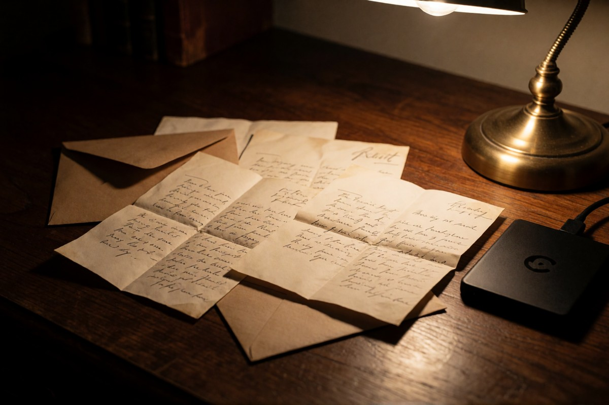

Cronaca · 25 novembre 2026
De Gennaro, le lettere e l'hard disk lasciato al procuratore

Prima di togliersi la vita l'ex capo della Polizia ha scritto quattro lettere. In una busta per il procuratore di Caltanissetta ha lasciato anche il disco che le perquisizioni non avevano trovato. La procura resta in silenzio.
di Franco Zanghì
Gianni De Gennaro, l'ex capo della Polizia morto sabato 21 novembre 2026 nella sua tenuta di Fonteblanda, in provincia di Grosseto, prima di togliersi la vita ha scritto quattro lettere a mano. Una era per il procuratore di Caltanissetta, Salvatore De Luca, il magistrato che ne aveva chiesto l'arresto per il depistaggio sulla strage di via D'Amelio. Lo riportano il Corriere della Sera e Repubblica, ripresi dall'ANSA e dalle altre testate.
Sono scritti a penna scura, di due o tre facciate ciascuno. I destinatari, secondo i resoconti, sono quattro: il procuratore; chi avrà voglia di pubblicare un memoriale; la moglie e i figli; e il custode della tenuta, al quale De Gennaro chiede di prendersi cura dell'azienda agricola e dei cani.
Le frasi riferite dai giornali
Nella lettera al procuratore, secondo il Corriere, c'è l'accusa di essere «arrivato dove neanche la mafia era riuscita ad arrivare». Dal memoriale arrivano le righe sulla propria difesa: «Sono un uomo di Stato», «tutto quello che ho fatto l'ho fatto per le istituzioni». Repubblica riporta una formulazione vicina: «Colpite un uomo di Stato che ha dedicato tutta la sua vita alle istituzioni».
Secondo il Fatto Quotidiano, nello stesso scritto De Gennaro contesta alla procura di voler «riscrivere la storia senza conoscerla». Chi ha letto le lettere, riferisce lo stesso quotidiano, non vi ha trovato rivelazioni utili alle indagini. I testi integrali non sono stati pubblicati da nessuno: tutte le citazioni sono di seconda mano.
L'hard disk che non si trovava
Il passaggio più pesante è un oggetto. Durante le perquisizioni del 12 e 13 novembre il procuratore gli aveva chiesto di consegnare un hard disk con i documenti sul caso di Salvatore Contorno, e De Gennaro aveva rifiutato. Quel disco è stato lasciato in una busta insieme alla lettera, con una riga di spiegazione: «Non ve l'ho dato perché non avreste capito niente». Il Fatto riporta anche l'aggiunta «comunque, eccolo qui».
Il numero dei supporti informatici sequestrati, invece, non è chiaro: fra quelli trovati in casa del figlio, quelli consegnati a un sottufficiale della Guardia di Finanza e due chiavette custodite da una funzionaria dei servizi, i resoconti non coincidono. E la tesi secondo cui la documentazione cartacea più delicata sarebbe stata distrutta è un'ipotesi dei pubblici ministeri, non un fatto accertato.
Il quarto piano che non parla
Il procuratore De Luca continua a non rilasciare dichiarazioni, e lo ha ribadito mercoledì mattina ai cronisti davanti al Palazzo di giustizia di Caltanissetta, dove sono appostati da tre giorni. Dagli uffici della procura non esce una parola.
Intanto il Riesame sul ricorso della procura contro il rigetto delle misure cautelari è fissato per il 1° dicembre, ma i difensori hanno chiesto più tempo e l'udienza è data per rinviata. Il processo sul cosiddetto depistaggio bis, che vede imputati quattro ex poliziotti del gruppo Falcone-Borsellino per false dichiarazioni sulla gestione di Vincenzo Scarantino, riprenderà il 22 dicembre.
Per De Gennaro valeva la presunzione d'innocenza: era indagato, non condannato, e un processo che verificasse quelle ipotesi non ci sarà mai.
Fonti
- ANSA, «De Gennaro, l'hard disk non ve l'ho dato perché non avreste capito niente», 25 novembre 2026
- Open, «Le lettere-testamento, gli hard disk, le pen-drive», 25 novembre 2026
- Il Fatto Quotidiano, «De Gennaro al procuratore di Caltanissetta», 25 novembre 2026
- Il Difforme, «De Gennaro, le lettere al procuratore De Luca», 25 novembre 2026
- il Giornale, «L'ultima lettera di De Gennaro al pm di Caltanissetta», 25 novembre 2026
Le citazioni delle lettere arrivano tutte dal Corriere della Sera e da Repubblica, riprese dalle altre testate: i testi integrali non sono stati pubblicati. La data del 17 novembre è riferita da ANSA e Il Difforme agli scritti in generale, da Open soltanto alle due lettere private. Sull'autenticità esistono per ora le prime perizie calligrafiche del Ris, che secondo Il Fatto e Il Difforme «avrebbero confermato» la mano di De Gennaro. Il numero degli hard disk sequestrati non è univoco. Come nei giorni scorsi, questa pagina non riporta i dettagli materiali della morte né i nomi degli altri indagati. Sulla data dell'autopsia le fonti divergono e non è stato reso noto alcun esito.